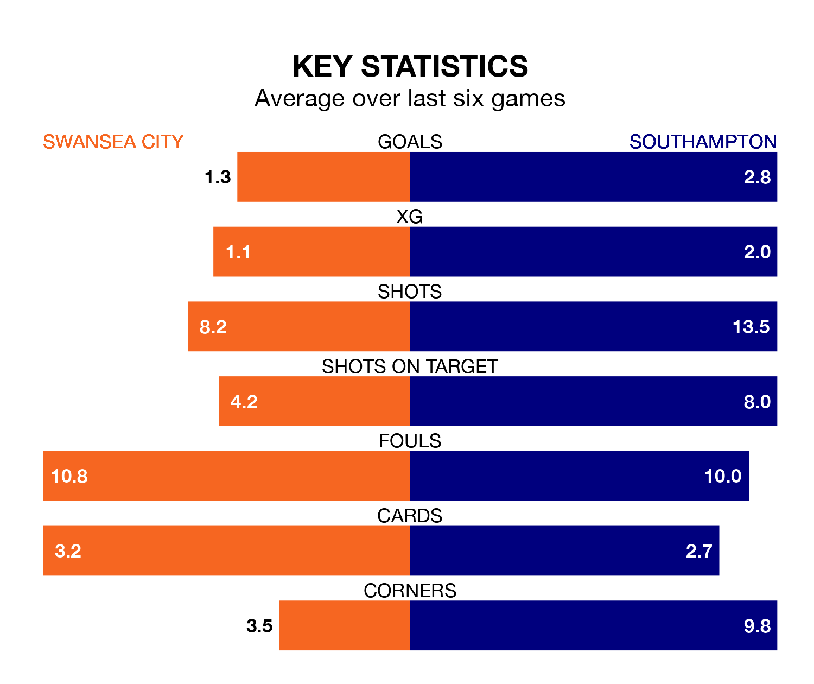

Southampton are strong favourites to take all three points despite Swansea City's home advantage in Saturday lunchtime's match at the Swansea.com Stadium.
*Betting Company* are offering odds of 1.85 on Southampton sealing the win, with the visitors sitting third in EFL Championship table.
Swansea, who are 15th in the league and 22 points behind the Saints, are priced at 4.01 to win. A draw is set at 3.84.
With 50 goals in 27 games so far this season, Southampton are the league's joint-second-highest scorers with 1.9 goals per game. And they are conceding fewer than average, letting in 31 goals at a rate of 1.1 per game.
Swansea, meanwhile, are average scorers, with 1.4 goals per game. They have conceded 1.5 goals per game.
In Adam Armstrong, the Saints have one of the league's most on-form strikers so far this season. He has notched 14 goals in 27 appearances, to sit second in the scoring charts.
His goal rate of one every 166 minutes is quicker than that of Joël Piroe, City's top scorer with a goal every 236 minutes, and a total of nine goals in 27 games.
The Swans are in mixed form in EFL Championship, with two wins and two draws from their last six games.
With five wins and a draw over that period, the away team's form is much better – they have taken 16 points from 18, compared to the hosts' eight.
In the last 10 years, Swansea and Southampton have played each other on 11 occasions. Swansea won two of them, Southampton eight, and they drew once.
On average, the Swans scored 0.5 goals and the Saints 1.5 in those matches.
Their last meeting was on December 26, when Southampton won 5-0 at home.
Swansea's last match was on Saturday, a 2-2 draw against Birmingham City, with Harry Darling and Jamal Lowe getting the goals for the Swans.
Southampton beat Sheffield Wednesday 4-0 last time out, also on Saturday, with Adam Armstrong, Che Adams, Ryan Fraser and Sékou Mara on the scoresheet.
Saturday's match will be refereed by Oliver Langford, who has taken charge of 16 EFL Championship games so far this season, issuing four red cards and booking 54 players. He has awarded one penalty.
The last Swansea game Langford refereed was a 2-1 home loss to Bristol City on September 2. His last Southampton match was their 1-0 win away at Queens Park Rangers on December 23.
Updated: 06:13 (UTC), 18/01/24